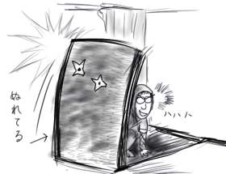
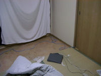
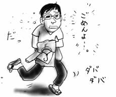
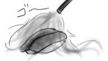
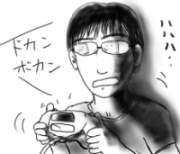
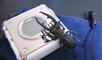
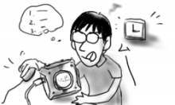
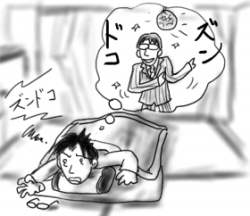

台風カミング！
台風というと秋口にカム！(not ラスト・クリスマス)というイメージが強すぎるので、なんとなくもう夏が終わってしまったような錯覚に捕われています。雨は夜更けすぎに豪雨と強風に変わるらしく、用心した人がフロアから早めにいなくなってしまったので、なんとなく週末みたいな錯覚にも捕われました。でも、今週はまだ半分しか終わっていない。ガックリすます(最悪)。
昨日の今日なので、帰宅してからすぐに雨戸を閉めましたよ(過剰反応)。雨戸を閉めると窓から何も見えなくなり、すごい鎧(雨にも負けない！)を装備したような強まり気分を得ると同時に、引きこもり感も増しました。これはこれでいい気が！(いけません)
問題は朝日が差し込まないので明日起きられるかどうかです。検討を祈ります。
夜遅くに帰宅して、思わず呆然としました。
台風の影響か、物凄い夕立ちが降ったのは知っていましたが、まさか朝出るときに窓を閉め忘れていたなんて！開け放した窓から吹き込んで来た雨が、畳と布団を蹂躙したなんて！びしょびしょの畳と布団を前に立ち尽くす僕の姿があります。
しかしそんな大惨事を前にしても「もっと過ごしやすい、生きやすい世の中にならないものかなぁ」という緊張感のない的外れな感想を浮かべる僕の脳みその離人症ぶりはどうなのか。
しかしここで世を儚んでいても仕方ない。カビがガビガビと生えてこないように、そしてそのカビが僕の懐にダメージを与えないように、これから砂漠化大作戦を決行しなくてはならないのです。シッケトール曹長！出撃であります！菌類ごときに部屋の覇権を渡すわけにはいかないのであります。
というわけで、最も被害が大きくて、ほぼ全身びしょぬれ状態の畳をマイナスドライバ片手にひっぺがしにかかります。
秘技！畳返し！(楽しんでるんですか？)

畳は通路の壁に立て掛けて乾燥を待ちます。室内への雨滴侵入をかなり防いでくれたであろう、びしょぬれ満身創痍のカーテンをひっぺがし、洗濯機にシュート！布団からシーツをはぎとり、洗濯機にシュート！洗い終わったら部屋に無理矢理干して回ります。

写真は畳をひっぺがして、シーツを無理矢理カーテンレールに干してあるところです。お気付きの方はすでにお気付きかと思いますが、畳をひっぺがした手前にPowerBookDuoが転がっています。
このPowerBookDuo、帰宅時には片面(窓際の方)がびしょぬれでした。鞄を置く手も忘れて、ワナワナと震える手でスリープから復帰させてみると、液晶に妙な線が走ってブビビーっと電源が落ちてしまいました。購入してかれこれ6年、ついに別れの時が来た。今までありがとうPowerBookDuo。絶対に忘れないよ。
と思っていたのですが、乾いたら直りました。なんだよ、パソコンなんて結構いい加減だナ！
いや、現役で使っていたときはガラス細工のように繊細で、学会発表などに携えてちょっと遠出をするとバカみたいに壊れた(マザーボードは3回、液晶は2回取り替えました)くせに、現役落ちしてからはファインセラミックス並に頑丈です。どうなってるんですか。
というわけで、今晩寝る場所(布団も含めて)どうしようと途方に暮れている間にものすごい深夜になってしまいました。アチャー。
会社で昼飯を食べていたら同期達が週末に集まって飲み会をしたらしいことが会話の端々から聞こえて来ました(この時点ですでに会話に加われていません)。はみ男子の面目躍如です。でも、会話の端々から類推すると、どうやら合コンだったようなので、誘われなくてよかった。より惨めな思いをするところでした。よかったよかった。よかったをほじくり返して、そして埋めるような人生。
しかし、男女10対10の合コンだったらしいのですが、通常そんな大規模でやるものなのでしょうか。サッカーでもやるつもりですか。
バンガイオーは人生の合間(ご飯が炊けるまでとか、風呂が沸くまでとか)にちょこちょこと進めているのですが、チマチマと地味な攻略を要求されるステージが続いて鬱憤がたまったところへ、ボスとのミサイル400発乱れ撃ち祭ステージがやって来て、待ってました、ひゃっほー！という繰り返しで、かなり飴と鞭を使い分けられてる気がします。現在27面で一体あとどれくらいあるんだろう、そろそろ終わりだろうか、と思って検索したら、全45面でした(知らなかった)。まだ半分かよ。
あはは、爆発は楽しいな。ちょう適当な文章で終わります。すいません(誰ともなく)。
世間からはみ出し気味の男子(通称：はみ男子)。すなわち僕、こんばんわ。
日曜は一週間分の食料を買い出しにスーパーへ出かけます。最近、「おさかな天国」に対抗して、製肉売り場では、桂雀三郎 with まんぷくブラザ〜ズの「ヨーデル食べ放題」が垂れ流されています。今さら売れないと思います。
かなりの青空が広がっていたので洗濯をしたのですが、今日は青空と引き換えに風が強く、夕方になって取り込もうとベランダに出たら半そでシャツが一枚足りません。ベランダから身を乗り出して下を覗き込むと1階のベランダの端に引っ掛かっているのが見えました。
急いで2階の自室から取りに降りると、当該半そでシャツの隣に見覚えのある服が引っ掛かっています。僕の冬服でした。それを見てようやく、そういえば春先からその服を全然見ていないということに思い至ったのでした。まさか、こんなところに脱落して1シーズンを乗り越えていたとは。全く気が付いてやれなくてごめんよ。風雨にさらされ、日光にあぶられてすっかり脱色したその冬服も抱えて自室に戻り、速効ゴミ箱にシュートでした。

ところで、週末になると、いつも突然睡魔が襲ってくるのですが、さすがに椅子からズリ落ちて床で丸まって寝ていた時にはやりすぎかと思いました。
まさしろと西原さんとでお寿司を食べに行ったんですよ、がってん寿司。そしたら何だか人がいっぱいで入れないんです。など、かなりのコピペっぷりで申し訳ないですが本当にそんな感じでした。次から次へと雲霞のごとく、子連れファミリーが入り口付近の待ち行列に大量にキューイングされている様はかなり無気味でした。郊外って怖いなぁ。
僕達は、待ち行列じゃなくて店内のカウンターがある方に移動して待っていた(迷惑)のですが、そこからカウンター席を見ていると、お子さま達の寿司のハンドリングの危うさにかなり見てらんない思いをします。バラす、箸でつつきまわる、自分でも握ってみる、など、かなりのならず者(行儀が)ぶりです。
そしてぼんやりと待ち行列の子連れファミリーを眺めていると、そのゲームボーイ普及率に驚きます。アドバンスなんてまだまだですよ、時代はゲームボーイカラーです。
がってん寿司は僕の家にほど近いところにもあるのですが、友達が少ないために一回も行ったことがなかったのですが、まさか離れたところのがってん寿司に行く機会が出来るとは努々思っていませんでしたとも。そして、回転寿司としてはかなりうまい部類に入ると思います。握った寿司にガスバーナーで点火する「あぶり寿司」はかなりのうまさでした。これは近所のがってん寿司も利用しない手はないな、と思ったのですが、友達がいないので、それは無理でした。

そして、帰りに大宮の中古CD屋に寄ったら目を見張りました。DMX krew「Ffressshh!」(Rephlex)とSchlammpeitziger(シュラムパイトチガーと読む、らしい)「Collected Simplesongs of my temporary past」(sonig)がポロリと置かれてるじゃないですか。前者はSMEがRephlex祭りだワショーイと称して(一部嘘)出した、かなり少量の日本盤が店頭から消えて以来全くお目にかかれなかったのですが今回は珍しい輸入盤が格安で！シュラムパイトチガーの日本盤はそれなりに大きいCD屋には置いてあるんですが、輸入盤の中古落ちで同じく安かったのでポロリと購入です。前者は、90年代後半に出たとは思えないアホアホ、ペナペナ、エレクトロポップで、後者はいかにもソニグレーベルっぽい牧歌的でチープな電子音で奏でるポップという感じです。
でも、今の心情にピッタリはまったのは、同じ中古で買ったThe Orb「Pomme Fritz」(Islands)のアンビエント・ハウスだったりして。この辺りまでのOrbはよかったのになぁ。
今日は会社を早々に逃げ出しました。たまには逃げ出して行きたい。でも逃げ出してごめんなさい(弱い)。
「あたしンち」をゲラゲラ視聴した後は、西原さんに貸してもらったドリキャスの「爆裂無敵バンガイオー」をドカンボカンと遊んでました。残念ながらVGA対応じゃないので、部屋の汚いオンボロTVで遊んでいるのですが、なかなか楽しいです。尾を曳くミサイル400発とかブリブリっと出ます。自機と同じ大きさのフルーツを集めます。敵を倒すと出て来るのですが、かなりアホっぽくて最高。ミサイル400連発よりもむしろこっちが売りでは(違います)。
隣のズンドコサブちゃん(サブウーハー野郎)に対抗して、こちらは平日夜中に爆発音を響かせてやるのです(よっぽど迷惑です)。ドカンボカン！

とかノンキに書いてますが、世の中では布団叩く音がうるさいと散弾銃で射殺されたりしているのでシャレにならないと思います。でも、散弾銃は複数の弾丸が重なって飛んでくるので、カウンターで全方向弾(ボム)を撃つと大量のミサイルが出せる！
駄目だ！(てやんでぇ！)
今日は会社から出るのがいつもより遅めでした。週末に買い貯めてあった食材もほとんど底をついたので、珍しく外食でもして帰ろうと思ったのでした。
とぼとぼと自転車で進んでいると、道沿いの民家からものすごい怒声と物の割れる音が聞こえて来てビビりました。「かていないぼうりょく」だったようです。民家のちょうど前を歩いていたサラリーマンのおじさんは、突然の怒号と物の割れる音にびびって肩をすくめて振り返ってました。僕は最初、自分が怒鳴られたのかと思って一人で不安になってました(被害妄想)。
そのまま道沿いを行くと、市内ではそれなりに有名なラーメン店があるのでそこにでも入ろうかと思ったのですが、結構客が入っていたのであきらめました。座れそうになかったとか待たされそうだったとかいうわけではなく、人がたくさんいて恐かったからです。
コンビニの入り口前では、ガラの悪い若者達が地べたに尻を貼付けながら、携帯電話で女がどうの、酒がどうの、コクってどうの、と叫んでいたので入るのをやめました。恐かったからです。
結局、入ったのは全く人の入っていないラーメンチェーン店でした。チェーンならいくら人が入っていなくても、そんなに味がひどいこともないだろうと思ったのです。
ラーメンとサラダを頼んだのですが、普通のご飯用の茶碗に刻んだキャベツを山盛り乗せた物がサラダとして出て来たときには「何丼頼んだっけ？」と一瞬本気で思いました。ドレッシングも何もかかってない野味あふれる感じは嫌いではないので、ラーメンの塩味を打ち消すにはちょうどいい、とばかりにモシャモシャとキャベツを頬張っていたのですが、食事も終わりに差し掛かった頃、店員が「ドレッシング…すいませんでした…」と茶碗でたっぷりとドレッシングを持って来たので驚きました。茶碗って便利！
若者達が地べたに尻を接着してないコンビニの方へ寄ったところ、「世界の昆虫」が置いてあったので「21世紀はアジアと昆虫がクる」の信条のもと、一つ買って帰りました。

出たのは「オオフタマタクワガタ(スマトラ、カリマンタン生息)」で、割と出来がよろしくていいのですが、なにせサイズといい色といい、アイツを思い起こさせて何だか微妙な気分です。PCいじっててふと視界に入るとナチュラルにビビれます。
今日の僕はビビりすぎだ。
mp3をプレイヤに出し入れしてたら、今日もまた夜更かしになってしまいました。DCPRGとROVOのスプリットアルバムにしてみよう！とか無茶なこだわりを見せるからダメなんだと思います。決して多くないメモリをやりくりするのは、デビルサマナー・ソウルハッカーズのCOMのカスタマイズみたいで楽しいです(分かりにくい例え)。
Mac版の転送ツールでは、スマートメディアを挿しているとなぜか曲順の入れ替えでフリーズするのも夜更かしの一因です(最初から最後まで脳内で曲順を考えてから転送しないといけないから)。

後は何かなあ。お風呂読書してたらのぼせたくらいかなぁ(適当)。
昨日、隣に誰かが引っ越して来たのですが、どうも朝からサブウーハー野郎、通称サブちゃんだったようです。これで僕の部屋の両隣りがサブちゃんということになりました。ツイてるね(サブウーハーが)！ノッてるね(隣の人が)！
僕は平常時でも上が100程度しかない低血圧人間なので、寝起きのダウナーぶりはすさまじいのですが、そこに来てズンドコウーハーでは中々に気分の悪い一日の始まりです。こうなったらこちらも対抗して、ドリフのズンドコ節、零心会のズンドコ節、きよしのズンドコ節、アキラのズンドコ節など、ズンドコ節祭りを大音量で繰り広げるしかないと思ったのですが、PC用のヘボスピーカーしか持っていないので断念せざるを得ませんでした。あとアキラのズンドコ節は持ってなかった(他はあるのか)。

mp3プレイヤに、ああでもないこうでもないと、いろいろ考えながら曲を入れたり出したりしているとぐんぐんと時間を消費します(ヘボい使い方)。
昨日は帰宅したのが遅かったので更新できませんでした。今日は昨日の日記を書きます(矛盾)。
日曜の午前というと一週間の睡眠不足を補う格好の時間帯です。それなのに、家の隣の町内会集会所では、小学生達が朝も早くから夏祭りの練習で太鼓をどんどんと打ち鳴らすのです。太鼓に合わせて流れる「アラレちゃん音頭」が僕を安眠から引きずり出すのです。君達、そんな朝早くから、めちゃんこめちゃんこ叩かなくていいじゃないか。んちゃちゃっちゃじゃないよ、無茶苦茶だよ。
朝の9時から12時過ぎまで延々と「アラレちゃん音頭」を叩き続けて頭がおかしくなったりしないのだろうかとベランダから寝ぼけた目で集会所を覗き込んだところ、集会所の隅でモジャモジャ頭(鬼カット？)のおばさんがドッカと椅子に腰掛けて子供達を踊らせ続けていたのでした。なにゆえそこまでして「アラレちゃん音頭」を！アラレちゃんを知らない世代の子供達に！
ほよよでホイ！じゃなくて保養が欲しいよう(超無理矢理)、とジタバタと布団でもがいていたのですが、「アラレちゃん音頭」は結局13時過ぎまで鳴り止みませんでした。これがせめて「ドラえもん音頭」なら！(そうか？)
おまけに家の反対側では何やら工事が始まって釘を打ち付ける音が鳴り響き、ずっと空き部屋だった隣に誰かが入居して来て引っ越し屋とドタバタとやり始めて、とてもじゃないけど家に居たら気が狂うと思い、秋葉まで逃げ出しました。
秋葉では僕の福沢諭吉さんがたくさん消えてしまった気がします。でもその代わりに、ドリキャスをPC用モニタに繋ぐためのVGAボックスを買って綺麗な画面でプレイする用意をし、ドリキャス用のスティックがどこにも売ってなかったので、SS/PSからドリキャスへのコントローラ変換器を買ってサターン用のホリスティックを流用する準備を整え、繋ぎのドリキャスゲーム「ジェットセットラジオ(旧)」を安価で手に入れ、「斑鳩」準備は完璧です。
あと、なんかmp3プレイヤも小脇に抱えてた気がするけど、きっと気のせいですよ。